Recently I needed to put a small chamfer on a part. That should be a simple job. It wasn't. I find Aspire's own chamfer toolpath confusing and unpredictable, and building a chamfer out of a V-carve toolpath puts you in a fight with the math. So I wrote my own gadget to do it predictably.
The whole point of it is a chamfer that comes out the size you asked for, whatever the situation. You give it the shapes, the bit and the size, and it works out how to get there. Sometimes that's one profile toolpath. Sometimes the chamfer is bigger than the bit can take in one bite and it splits the job into passes. Sometimes it hands the cut to Aspire's own chamfer engine because that's the only thing that will do it. You don't have to know which of those applies, or why. That's the gadget's problem now.
Most of the time you'll type a size, press OK, and never think about any of it. There is one option in there worth knowing about though, because it's the reason the gadget got written. A V-bit chamfer can be cut anywhere along the flute. Same bit, same chamfer, same finished size, but the cut can sit down near the tip or up near the shoulder, and what changes is how deep the bit plunges and which stretch of the cutting edge does the work. Usually that makes no difference to you and the default is fine.
My job was one of the times it mattered. A run of parts bolted into a fixture, and the upper edge of the cutter was clipping the bolt heads, so I needed the cut forced lower down the flute to get clear of them. There's no intuitive way to force that with the tools as they are, so I built it into the gadget.
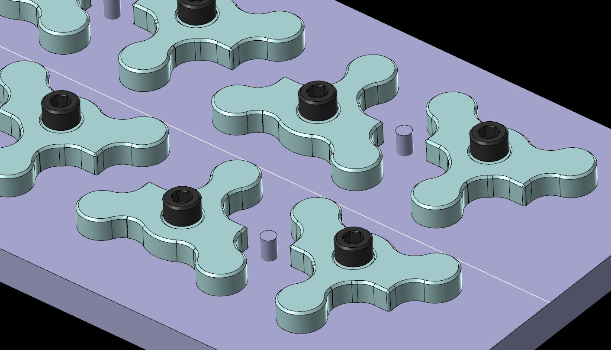
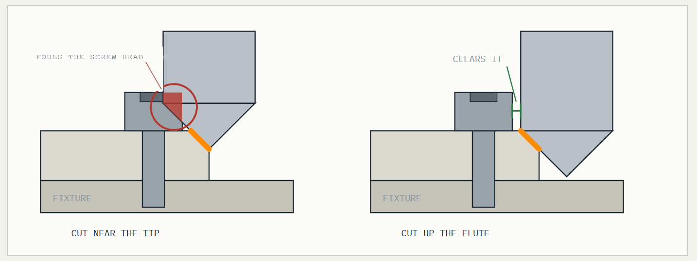
You don't get that if you cut on your line. You get it by not cutting on your line. Offset the vector out into the waste, set Machine Vectors to On, and run the profile deep enough that the slanted flank of the bit reaches your edge. How far out you put that offset line sets how deep the bit plunges, and that sets where along the flute the cutting happens.
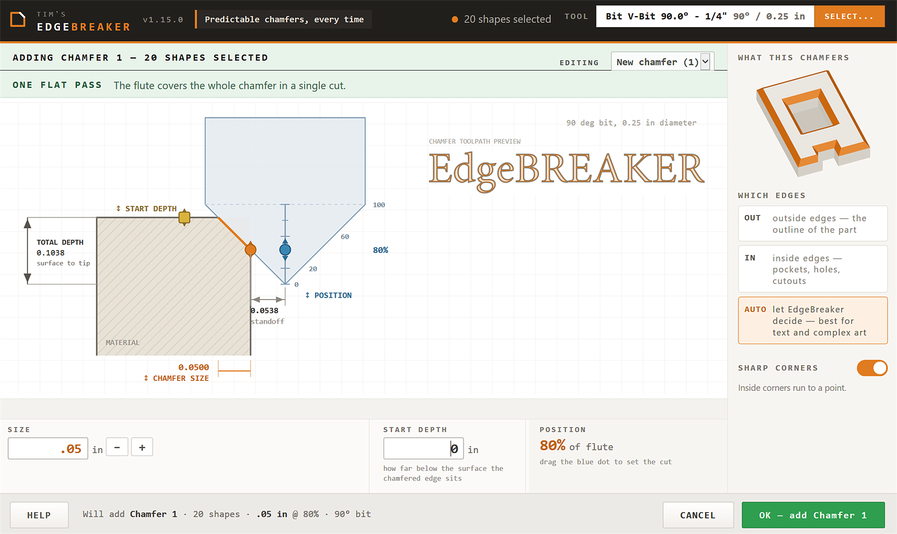
Select your closed vectors, open EdgeBreaker from the Gadgets menu, pick a V-bit. The bit comes straight out of your own tool database with its angle, diameter, feeds, speeds and tool number exactly as you have them set, so the chamfer gets cut with the same numbers as the rest of the job.
Three handles sit on the section view and you drag them. The orange dot on the bevel sets the chamfer size. The yellow square on the surface sets how far below the top of the stock the edge sits. The blue dot on the bit sets where on the flute you cut, snapping to six spots, 0 down at the bottom just clear of the tip and 100 up near where the flute runs out. Everything redraws as you go, so the depth a position needs is in front of you instead of printed on a button you haven't pressed yet. The boxes are all still there. If you'd rather type, type.
Cut high and you're using fresh, wide flute instead of the tip, which is a point that barely cuts and wears out first. What you pay for it is depth. On a 60° half inch bit a 0.03 in chamfer wants 0.1169 deep at 0% and 0.3897 at 100%, for the identical chamfer. Take the highest spot your bit and your stock will reach. Mine wanted the low end, on account of the bolt heads.
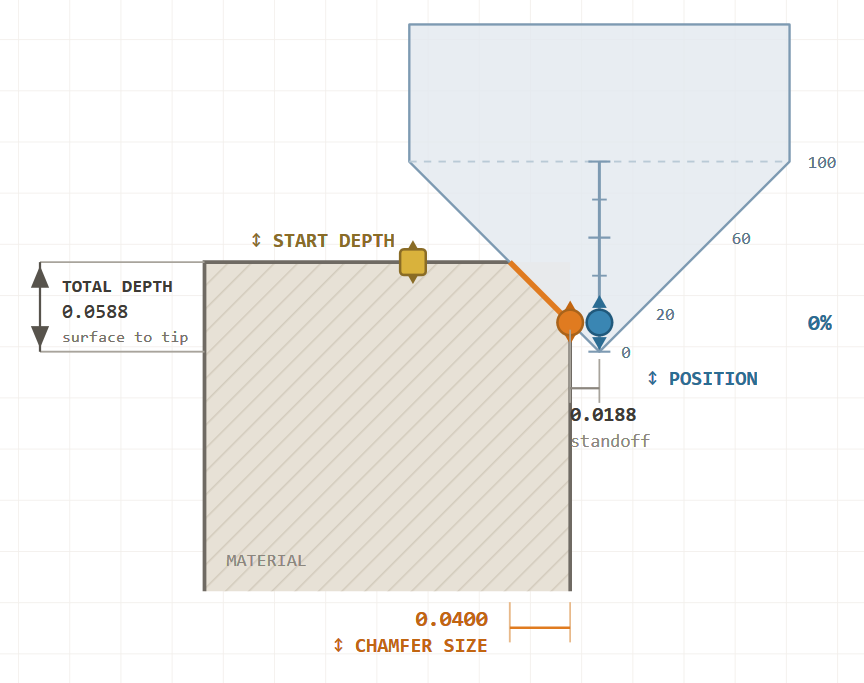
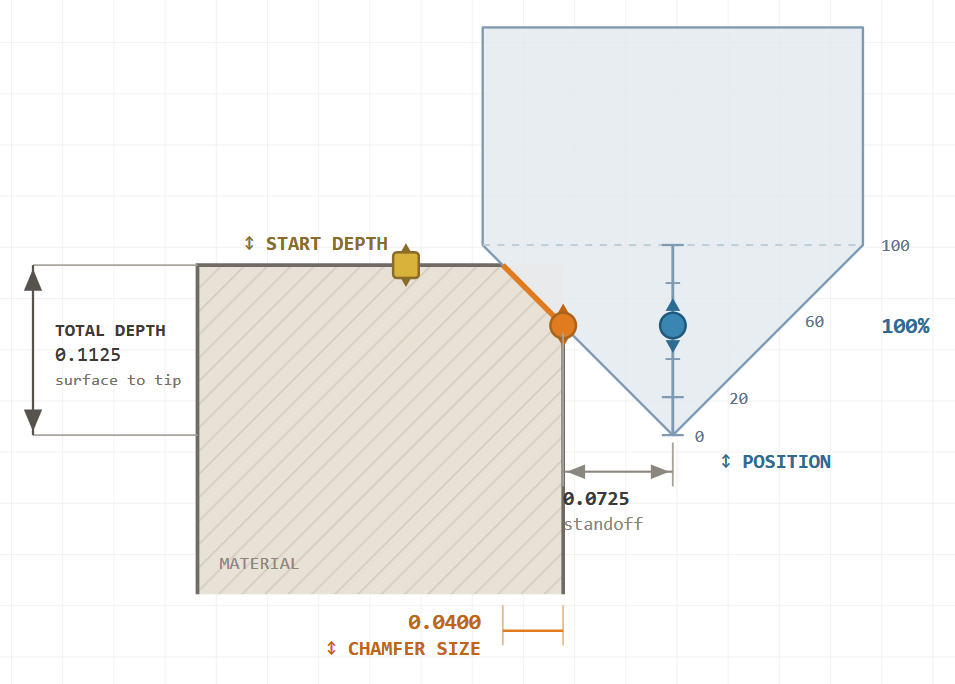
Beside the section view there's a preview of the shapes you actually selected with the band the chamfer eats painted onto them. Drag the size up and watch a thin arm go solid orange. That arm has lost its flat top completely, and until now you'd have found that out after building the toolpath and simulating it. It's your real artwork, not a diagram of somebody else's.
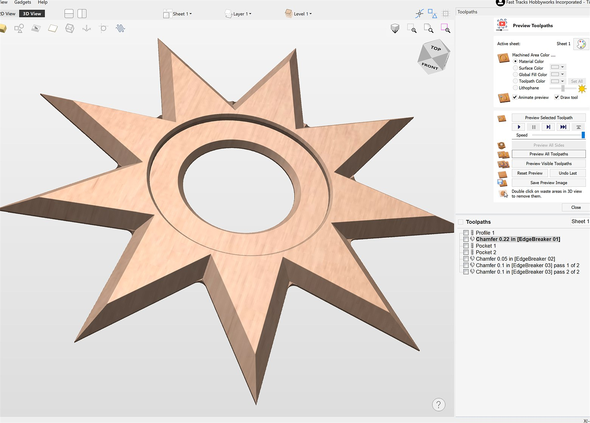
The edge you want broken isn't always at the top of the stock. It might be a pocket floor, a second level, a face you've already skimmed. That's what start depth is for. Tell it how far down the edge sits and it drops the whole cut by that much, chamfer unchanged. The one below is 0.1250 down, so the machine reaches 0.2113 in total to put a 0.0500 chamfer on it.
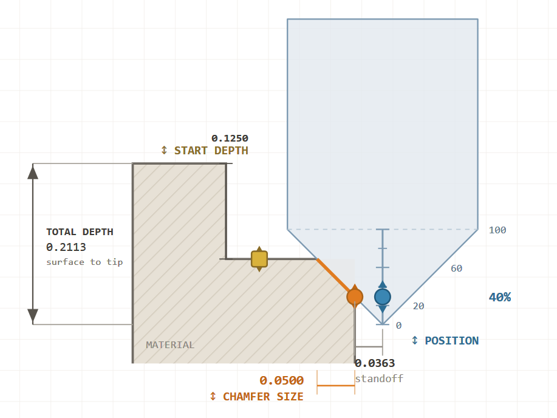
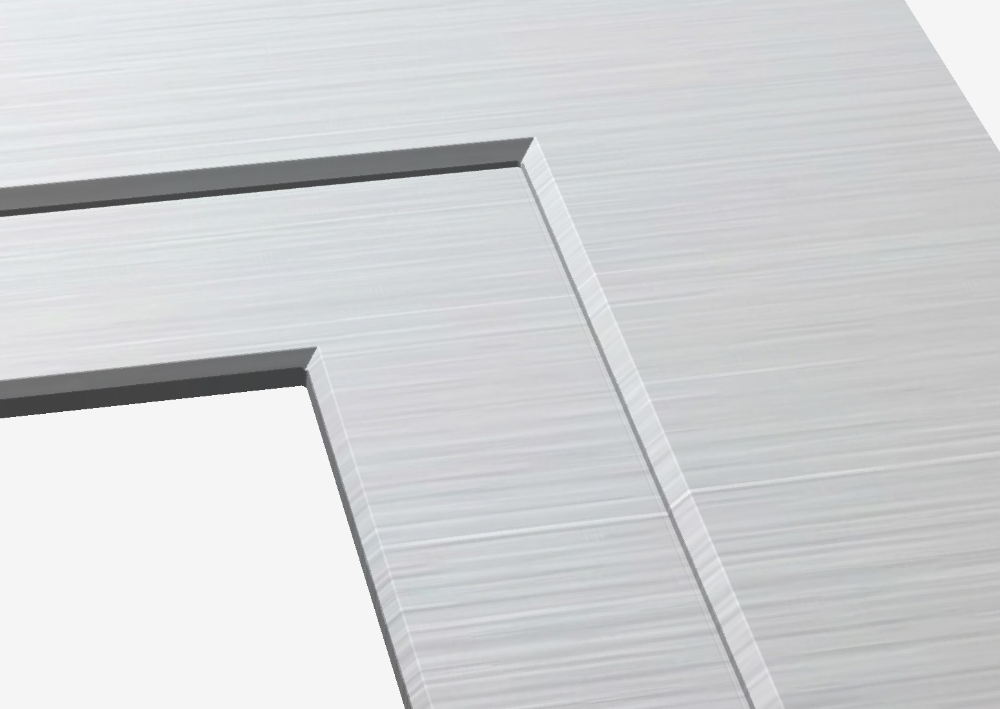
A new chamfer always opens at 0, and start depth is the one setting that deliberately doesn't carry over from your last run. A leftover quarter inch from yesterday's pocket applied to today's flat job would cut a quarter inch too deep and look perfectly normal on screen while it did it.
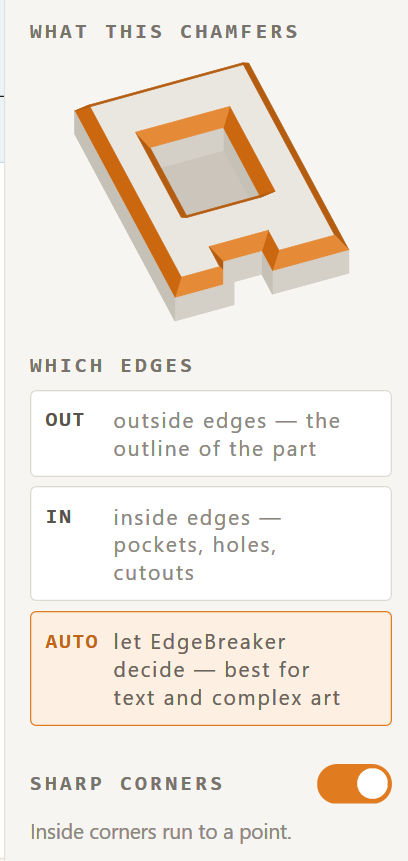
The one thing the gadget genuinely can't work out for itself is which side of your line the material is on. A pocket and a raised shape are the same closed line. So that moved out to its own panel on the right, with a block above it drawing what you picked.
OUT is for the outline of the part, where the material is inside your line and the chamfer eats outward into the waste. That's a sign blank, a bracket, anything you're cutting free of the sheet. IN is for a pocket, a bore or a bolt hole, where the material is outside the line and the chamfer opens the hole up a little wider. A plain hole on its own is the case people get wrong, because it looks like a shape and it isn't. AUTO works it out shape by shape from how they nest, which is what you want for lettering and for any part with holes in it, outward round the outlines and inward into the counters. It's the default and it's right most of the time.
If a chamfer comes out with a step in it, that's the first thing to check.
Inside corners on a chamfer normally come out rounded, because at one fixed depth the bit can only get so far into a corner. Turn Sharp corners on and the bit rises as it drives into each corner, so the two edges meet at a point instead. Raised lettering is one chamfer now, the whole lot selected with the edge side left on AUTO, outward round the outlines and inward into the counters, sharp on both.
On a sharp run you'll see the orange offset line sitting further out from the pocket wall than usual, which looks wrong and isn't. That line is what the machine steers by, not the cut, and the chamfer still lands where it always does. Outside corners still round over, nothing to be done about those.
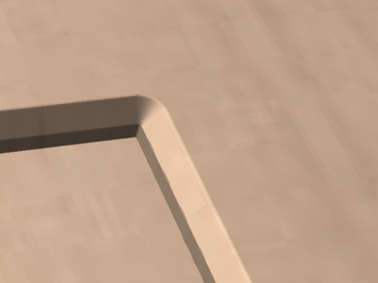
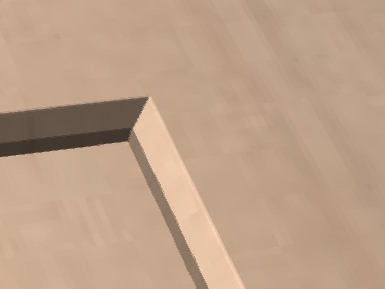
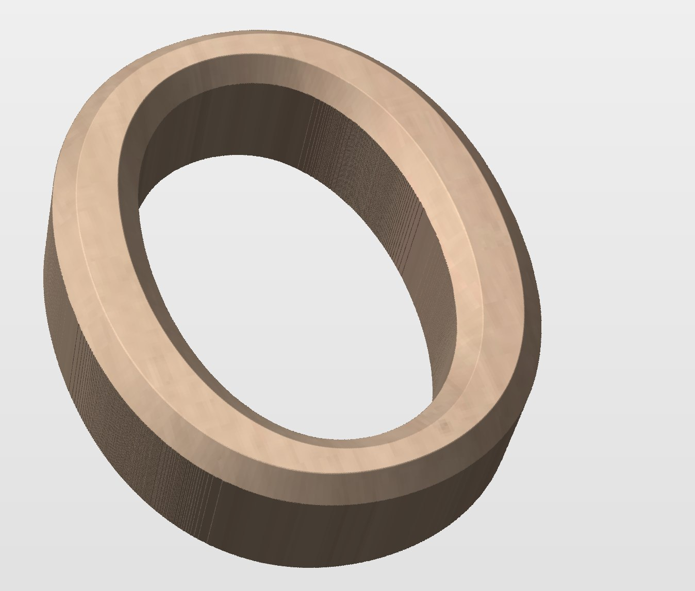
A nine point star cut as a pocket, sharp corners on, and a 0.15 chamfer asked for off a quarter inch 90° bit. That's past what the flute can sharpen, so the cut goes to Aspire's own chamfer engine and runs the tip of the bit down each corner instead. You give up the cut position when that happens, because the cut has to come off the tip. The blue dot leaves the bit, the position box reads TIP, and the banner says CUT ON THE TIP so you're not left guessing why.
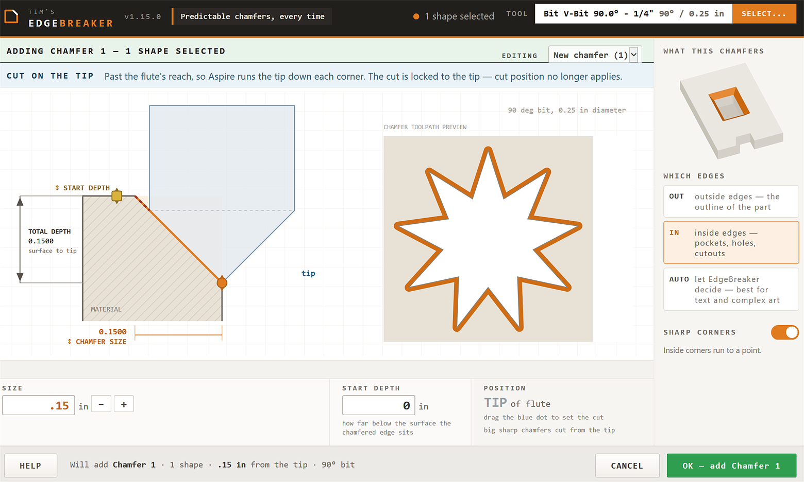
Vectors have to be closed. Anything too narrow to chamfer at the size you asked for is skipped rather than fudged, and it tells you how many it left out. Ask for a chamfer bigger than the bit can take in one bite and it cuts it in several passes instead of refusing, named pass 1 of 3 and so on, and that order isn't a preference, every pass but the last is sitting out over the part relying on the one above to have cleared the way. Run them backwards and you've buried the bit again.
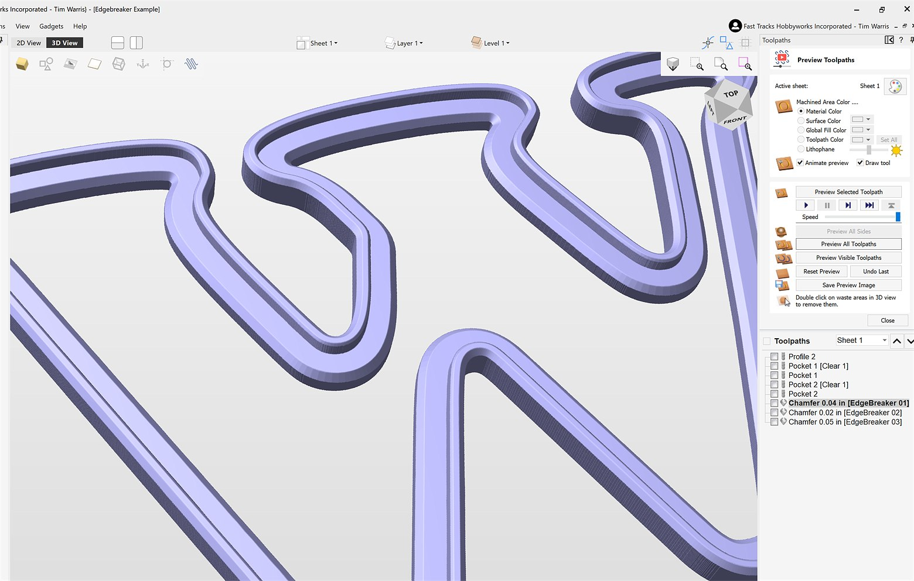
If it isn't what you wanted, just run it again. Your vectors are still selected so it knows which chamfer you mean, and the settings that built it come back already filled in.
This started out as a very simple gadget to get me around the interference problem with those bolts. Then it kept growing, the way these projects do, until it had every bit of functionality I could think of in it. Getting here took dozens of hours of trial and error to work the bugs out and make the thing pleasant to use, and I made every mistake there is to make along the way.
Which is where you come in. What I need now is people using it and telling me what I missed or got wrong. It's had one pair of eyes on it and one pair of eyes never finds everything.
Installing is a double-click on the .vgadget and a restart of Aspire or VCarve. It goes in over the top of an older copy, so there's nothing to uninstall first, and your existing chamfers come back exactly as they were. Windows will probably warn you about the file when you download it. That's only because it's new and hardly anyone has it yet. Choose Keep and open it.
I built and tested it in Aspire 12.5 and someone has since run it in VCarve Pro 12.5. There's nothing in it that needs either one in particular, so older versions should be fine, I just haven't tried them. It's free and it's here: